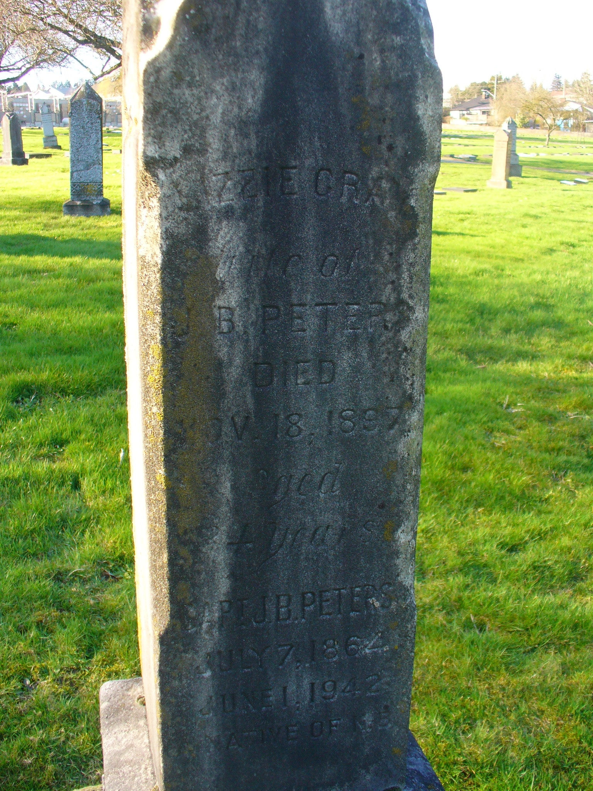

Rowena Elizabeth Peters (née Gray) 1863 - 1897
[ Home ] | [ Calendar ] | [ Surnames Index ] | [ Family History ]Rowena Gray, the wife of James Bedford Peters (the third cousin twice-removed on the father's side of Nigel Horne), was born in Nichol, Wellington, Ontario, Canada on Feb 22, 18631,2 and married James (with whom she had 2 children: James Ivan and Rowena Elizabeth) in New Westminster, British Columbia, Canada on Nov 21, 18863. In 1881, she lived in Ontario, Canada4.
She died on Nov 18, 1897 in New Westminster1,2 and was buried there after Nov 18, 18971,2.
Children
- James Ivan was born on Jun 15, 1889
- Rowena Elizabeth was born on Jun 26, 1897
Citations
- Canada, Find A Grave Index, 1600s-Current Ancestry.com Operations, Inc.
- Web: International, Find A Grave Index Ancestry.com Operations, Inc.
- British Columbia, Canada, Marriage Index, 1872-1935 Ancestry.com Operations Inc
- Canada Census 1881 - Findmypast (was age 15)
Media
Elizabeth Peters - gravestone

Canada Census 1881 - CAN-CENSUS-1881-00953106
Family Tree

Generated by Ged2Site. Last updated on Jul 20, 2025